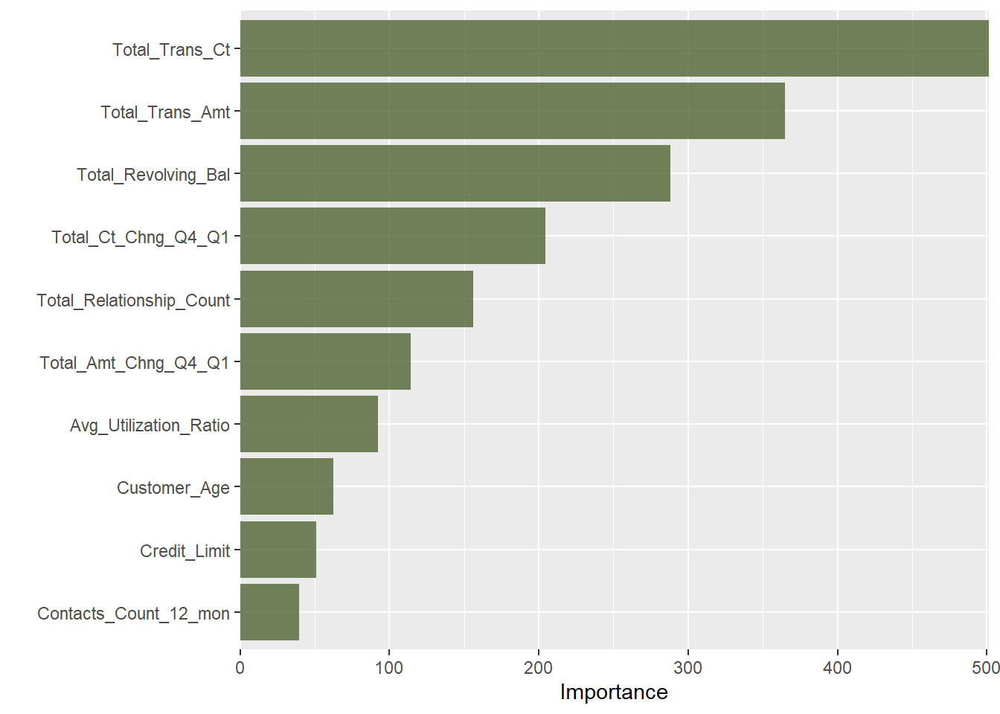
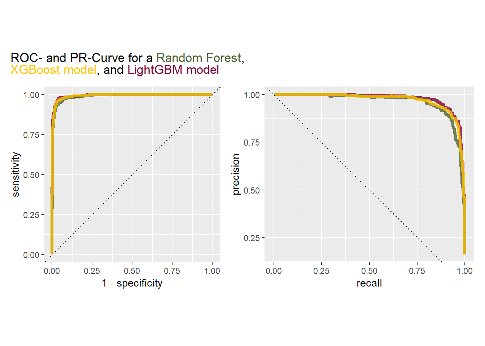
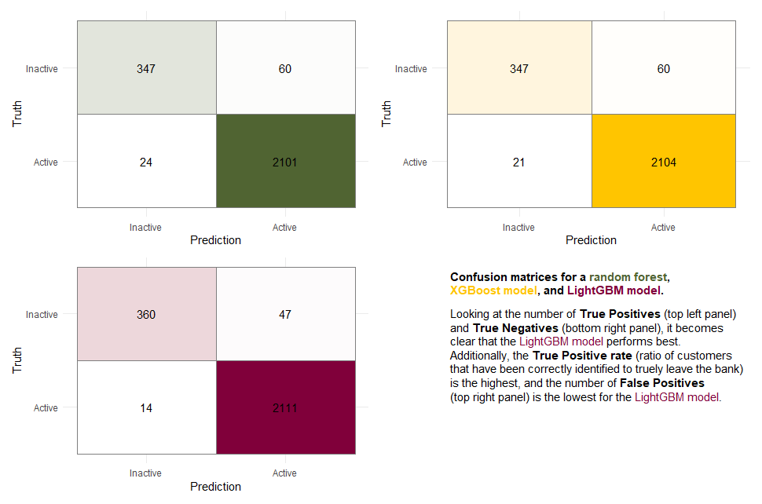

library("tidyverse")
library("tidymodels")
library("vip")
library("finetune")
library("bonsai")
library("patchwork")
library("ggtext")Problem Set 06
Foreword
In this exercise session, we will consider multiple advanced machine learning models. Our base model will not be a penalized logistic regression rather than a random forest. The models we are considering subsequently, are also widely used in application as their performance on classification tasks is superb! However, similar to random forests, their explainability is still subpar compared to a simple logistic regression or classification tree. Before we learn how to train and finetune these models, we will discuss some theoretical aspects.
Exercises
Exercise 1: Boosting vs. Bagging vs. Random Forests
In this initial exercise, we will briefly discuss similarities and differences between different algorithms introduced in the lecture.
Exercise 1a:
Explain in your own words, the difference between Boosting (Trees), Bagging (Trees), and Random Forests.
Exercise 1b:
Explain in your own words, the key differences and similarities between AdaBoost and gradient boosting.
Exercise 1c:
Explain the difference between XGBoost and conventional gradient boosting.
Exercise 02: Random Forest vs. XGBoost vs. LightGBM
In this last exercise we want to compare the performance of three popular machine learning models. The dataset for our benchmark is the Bank Churners dataset we have used in Session 05 as well.
Tip
If you get stuck on any of the exercises below, I recommend checking out the solution to Exercise 05.
Recall, that in this Session according to the ROC-Curve and PR-Curve and other metrics, the random forest model performed best. As we have covered an initial data analysis and data exploration of the Bank Churners dataset extensively in the previous sessions, you can find the necessary steps below. We will, however not resort to any resampling methods that directly influence the imbalance of our dataset for consistency reasons.
Reading Data and initial transformations
credit_info <- read.csv("BankChurners.csv")
glimpse(credit_info)Rows: 10,127
Columns: 21
$ CLIENTNUM <int> 768805383, 818770008, 713982108, 769911858, 7…
$ Attrition_Flag <chr> "Existing Customer", "Existing Customer", "Ex…
$ Customer_Age <int> 45, 49, 51, 40, 40, 44, 51, 32, 37, 48, 42, 6…
$ Gender <chr> "M", "F", "M", "F", "M", "M", "M", "M", "M", …
$ Dependent_count <int> 3, 5, 3, 4, 3, 2, 4, 0, 3, 2, 5, 1, 1, 3, 2, …
$ Education_Level <chr> "High School", "Graduate", "Graduate", "High …
$ Marital_Status <chr> "Married", "Single", "Married", "Unknown", "M…
$ Income_Category <chr> "$60K - $80K", "Less than $40K", "$80K - $120…
$ Card_Category <chr> "Blue", "Blue", "Blue", "Blue", "Blue", "Blue…
$ Months_on_book <int> 39, 44, 36, 34, 21, 36, 46, 27, 36, 36, 31, 5…
$ Total_Relationship_Count <int> 5, 6, 4, 3, 5, 3, 6, 2, 5, 6, 5, 6, 3, 5, 5, …
$ Months_Inactive_12_mon <int> 1, 1, 1, 4, 1, 1, 1, 2, 2, 3, 3, 2, 6, 1, 2, …
$ Contacts_Count_12_mon <int> 3, 2, 0, 1, 0, 2, 3, 2, 0, 3, 2, 3, 0, 3, 2, …
$ Credit_Limit <dbl> 12691.0, 8256.0, 3418.0, 3313.0, 4716.0, 4010…
$ Total_Revolving_Bal <int> 777, 864, 0, 2517, 0, 1247, 2264, 1396, 2517,…
$ Avg_Open_To_Buy <dbl> 11914.0, 7392.0, 3418.0, 796.0, 4716.0, 2763.…
$ Total_Amt_Chng_Q4_Q1 <dbl> 1.335, 1.541, 2.594, 1.405, 2.175, 1.376, 1.9…
$ Total_Trans_Amt <int> 1144, 1291, 1887, 1171, 816, 1088, 1330, 1538…
$ Total_Trans_Ct <int> 42, 33, 20, 20, 28, 24, 31, 36, 24, 32, 42, 2…
$ Total_Ct_Chng_Q4_Q1 <dbl> 1.625, 3.714, 2.333, 2.333, 2.500, 0.846, 0.7…
$ Avg_Utilization_Ratio <dbl> 0.061, 0.105, 0.000, 0.760, 0.000, 0.311, 0.0…credit_info_clean <-credit_info %>%
mutate(Income_Category = factor(Income_Category,
levels = c("Unknown","Less than $40K",
"$40K - $60K","$60K - $80K",
"$80K - $120K","$120K +"),
ordered = TRUE),
Education_Level = factor(Education_Level,
levels = c("Unknown", "Uneducated", "High School", "College", "Graduate",
"Post-Graduate", "Doctorate"),
ordered = TRUE),
CLIENTNUM = factor(CLIENTNUM),
Marital_Status = factor(Marital_Status),
Card_Category = factor(Card_Category),
Gender = factor(Gender),
Attrition_Flag = factor(Attrition_Flag, labels = c("Inactive", "Active")),
)Creating a training/test split and setting up a recipe
Once we have cleaned our dataset, we create our training and test split and subsequently the recipe we use for preprocessing the training data. As per usual, we use ten-fold cross-validation on our training data.
In terms of the recipe, perform the usual transformations:
Updating the role of the variable
CLIENTNUM.Creating ordinal scores for all ordinal features.
Creating dummy variables for all nominal features.
Applying a zero variance filter to the data.
Remove highly correlated features.
After creating the recipe we define our workflow.
set.seed(1)
split <- initial_split(credit_info_clean, strata = Attrition_Flag)
data_train <- training(split)
data_test <- testing(split)
folds <- vfold_cv(data_train, v = 10)
rec_ci <- recipe(Attrition_Flag ~., data = data_train) %>%
update_role(CLIENTNUM, new_role = "ID") %>%
step_ordinalscore(all_ordered_predictors()) %>%
step_dummy(all_factor_predictors()) %>%
step_zv(all_predictors()) %>%
step_corr(all_predictors())
ci_wf <- workflow() %>%
add_recipe(rec_ci)Exercise 2a: Training a random forest
Exercise 2a i:
Create and train a random forest model with \(1000\) trees and tune the parameters mtry and min_n. Set the engine to "ranger" and the variable importance measure to "impurity".
Train the model using the tune_grid function using the 10-fold CV object and save the predictions as we will need them for creating the AUC- and PR-Curve later.
Warning
Takes around 4 Minutes to compile on my hardware (Intel i7-10510U processor). Below you can also see how long it took for me to train the model.
i Creating pre-processing data to finalize unknown parameter: mtry User System verstrichen
1225.76 3.51 211.95 Exercise 2a ii:
Select the best model based on the metric "roc_auc" and train it on the entire training set. Subsequently, create two tibbles containing the data necessary to plot a ROC- and PR curve. When creating the tibbles, make sure you change the model name to "Random forest", so that we can correctly identify the models later during model evaluation.
Exercise 2a iii:
Create a plot showing the most important features with respect to the importance metric "impurity". For reference, you can find an example of what such a plot could look like below.

Exercise 2b: Training a XGBoost model
Since we have intensively covered random forests, we now want to make use of gradient-based models. AdaBoost is rarely used in practice anymore, which is why we will directly move towards training an XGBoost model. The approach is similar to training all the other models we have considered so far, i.e., setting up a model, defining a tunegrid, updating the model workflow, and training the model using the tunegrid function.
We can create an XGBoost model by using the boost_tree function. Looking at the documentation, you will notice that there are quite a few parameters for us to consider:
| Parameter | Description |
|---|---|
trees |
Number of trees contained in the ensamble |
tree_depth |
Integer for the maximum depth of the trees |
min_n |
Minimum number of data points in a node required for a split |
mtry |
Number of randomly selected at each split |
The parameters above are not new to us. In fact, they are the exact same parameters we use for training a random forest model. That is why we will not go into
| Parameter | Description |
|---|---|
loss_reduction |
Number for the reduction in loss that is required to split further \(\in [0,\infty]\) |
sample_size |
Subsample ratio of the training instances \(\in (0,1].\) |
learn_rate |
Rate at which the algorithm adapts from iteration to iteration \(\in [0,1]\). |
The three parameters above have only been referenced in the lectures so far, so let’s quickly describe them in a bit more detail.
loss_reduction :
On slide 91 of the lecture notes, a more general idea of boosting is formalized as follows:
At every step \(b = 1,…,B\) we aim to solve the following minimization problem:
\[ (\alpha_b,h_b) = \arg \min_{\alpha >0, h\in\mathcal{H}}\sum_{n=1}^N L(y_n,\hat{f}^{(b-1)}(x_i)+\alpha h(x_i)) \]
Here, \(L\) denotes a loss function that we aim to minimize with respect to some parameter \(\alpha\) and an additional (potentially weak) learner \(h\) that we add to the previous estimator.
If the term
\[ \left| \sum_{n=1}^N L(y_n,\hat{f}^{(b-1)}(x_i)+\alpha h(x_i)) - \sum_{n=1}^N L(y_n,\hat{f}^{(b)}(x_i)+\alpha h(x_i)) \right|, \]
i.e., the loss reduction between step \(b\) and \(b+1\) is smaller than the parameter loss_reduction, the algorithm stops.
sample_size :
Let \(q\in(0,1]\) denote the sample_size parameter and \(N\) the number of samples in our training data. Then XGBoost selects \(q\cdot N\) samples prior to growing trees. This subsampling occurs once in every boosting iteration.
learn_rate :
Consider the minimization task for the parameter loss_reduction. This minimization task is performed using some algorithm like Stochastic Gradient Descent, where you have to specify a learning rate. In simple terms, this learning rate specifies how quickly the model is adapted to the problem. Choosing a learning rate that is too high, might result in missing the objective because it is being stepped over, while a learning rate chosen too small might result in the objective never being reached at all.
To illustrate what a learning rate that is chosen too high looks like, check out the following example: Here, we try to find the minimum of a polynomial of degree 4 by using gradient descent.
Similar to choosing a learning rate that is too high, we could also choose a learning rate that is too low, resulting in the global minimum never being reached at all.
In our example, we will omit the parameter sample size and tune every other parameter.
Exercise 2b i:
So, your task is to create a model xgb_model, set the number of trees to 1000, and every other parameter to tune(), except for sample_size (here the default parameter is \(1\)).
Exercise 2b ii:
In most previous sessions we passed the parameters to be tuned to the grid_regular function. In this exercise, we will explore a different grid-generating function called grid_latin_hypercube. Compared to the grid_regular function, the grid_latin_hypercube function can be computationally less expensive to use. The main idea behind the Latin Hypercube Sampling method is, that they generally find a configuration of points that cover the parameter space with the smallest chance of overlapping redundant values.
Below you can find an example of such a grid.
Familiarize yourself with the dials::finalize function and explain why we have to finalize the mtry parameter. Why are we not using the data_train data set directly but instead use the data set generated when applying the prep, bake and select functions?
cooked_rec <- rec_ci %>% prep %>% bake(data_train) %>% select(-c("CLIENTNUM"))
xgb_grid <-grid_latin_hypercube(
tree_depth(),
min_n(),
loss_reduction(),
finalize(mtry(), cooked_rec),
learn_rate(),
size = 30
)
ci_wf <- ci_wf %>% update_model(xgb_model)Exercise 2b ii:
Use the newly created xgb_grid and the tune_grid function to train the XGBoost model.
Warning
Takes around 15 Minutes to compile on my hardware (Intel i7-10510U processor). Below you can also see how long it took for me to train the model.
User System verstrichen
0.34 0.22 1163.95 Exercise 2b iii:
Similar to Exercise 2a ii, select the best model based on the metric "roc_auc" and train it on the entire training set. Subsequently, create two tibbles containing the data necessary to plot a ROC- and PR curve. When creating the tibbles, make sure you change the model name to "XGBoost", so that we can correctly identify the models later during model evaluation.
Note
The following model is not relevant for the exam. However, it is extremely relevant in today’s ML landscape, so I encourage you to solve the following exercises as well.
Exercise 2c: Training a LightGBM model
The last model we want to train is called LightGBM. It was developed by Microsoft and is, as well as XGBoost, a gradient-based ensemble learner. An advantage compared to XGBoost is the focus on performance and scalability, meaning that it is designed to work well on CPUs while trying to at least match the performance of XGBoost.
The steps for training a LightGBM model are exactly the same as for training an XGBoost model, except for the model specification. Here we set the engine to "lightgbm" instead of "xgboost". Every other parameter stays the same, thanks to the {tidymodels} framework.
So, in this exercise, you’re supposed to repeat the steps we performed for the XGBoost model but instead, perform them for a "lightgbm" model.
Warning
Takes around 10 Minutes to compile on my hardware (Intel i7-10510U processor). Below you can also see how long it took for me to train the model.
User System verstrichen
0.39 0.17 754.32 Exercise 2d:
Tip
If you get stuck recreating the following plots, revisit the solutions to Exercise Sheet 05, where we created the same plot for a penalized logistic regression, a classification tree, and a random forest.
Create a plot showing the ROC- and PR-curve for each of the models we trained in the previous exercises (Random Forest, XGBoost, LightGBM). Compare the performances visually and decide which model performed the best. For reference, you can find what such a plot could look like below.

Exercise 2e:
For each of the previously trained models (Random Forest, XGBoost, LightGBM), create a confusion matrix based on the test sets to evaluate which model performed best on unseen data. An example of what such a plot could look like can be found below.

Exercise 2f:
For the confusion matrices above, find out which model has the overall best out-of-sample performance. For this best model, calculate the following metrics:
Sensitivity
Precision
Accuracy